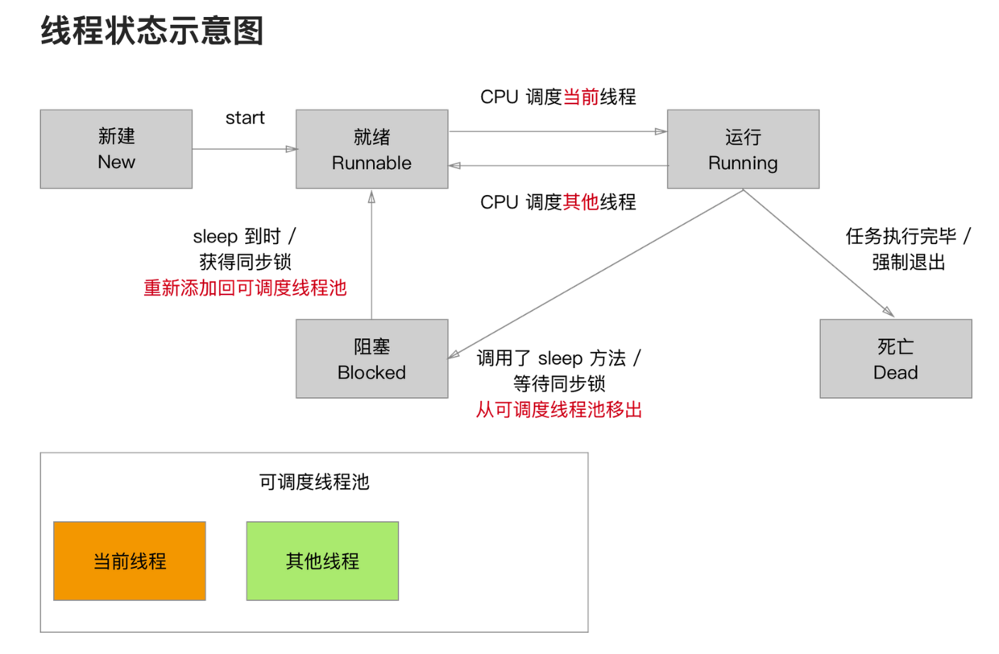

线程和进程
几乎所有的操作系统都支持同时运行多个任务，一个任务通常就是一个程序，每个程序就是一个进程。当一个程序运行时，内部可能包含了多个顺序执行流，每个顺序执行流就是一个线程。
- 进程（Process )
当一个程序进入内存运行后，即变成一个进程。进程是处于是处于运行过程中的程序，并且具有一定的独立功能，进程是系统进行资源分配和调度的一个独立单位。一般而言，进程有如下特征：
- 独立性：有自己独立的资源，且拥有自己私有的地址空间。在没有经过进程本省的允许下，其他进程是不能直接访问其进程的地址空间的。
- 动态性：程序只是静态的指令集合，而进程是一个正在系统中活动的指令集合。进程有时间的概念，具有自己的生命周期和各种状态。
- 并发性：多个进程可以在单个处理器上并发执行，互相不会影响。
- 线程（Thread）
线程也被称做轻量级进程，线程是进程的执行单元。就像进程在系统中一样，线程在进程中也是独立的，并发的执行流程。一个进程可以拥有多个线程，一个线程必须有一个父进程，但不再拥有系统资源，而是和父进程一起共享父进程的全部资源。多线程由于共享父进程的资源，所以编程更加方便，但是也需要小心线程不会影响到父进程中的其他线程。线程是独立运行的，它并不知道其他线程的存在。线程执行是抢占式的，也就是说，当前运行的线程在任何时候都可能被挂起，以便林另外一个线程可以运行。
- 多线程优点
- 进程间不可以共享内存，但线程之间共享内存十分容易。
- 系统创建进程需要为其重新分配系统资源，但是创建线程代价小得多，因此效率更高
为什么要用多线程编程
为了提高资源利用率来提升系统整体效率，实际往往是将耗时操作放在后台执行，避免阻塞主线程，在iOS中UI绘制和用户响应都是主线程。
NSThread
常用API
1 | - (void)viewDidLoad { |
- 线程的状态
线程被启动后，并不是直接进入执行状态，也不是一直处于执行状态，由于线程并发，线程会反复在运行、就绪间切换。创建一个线程后，处于新建状态，系统为其分配内存，初始化成员变量；调用-（void）start；方法后，该线程处于就绪状态，系统为其创建方法调用栈和程序计数器，此时并没有运行，何时运行取决于系统调度。

- 终止子线程
每个线程都有一定的优先级，优先级越高获得执行机会越多。目前通过qualityOfService属性来设置，原来的threadPriority由于语义不够清晰，已经被废弃了。
1 | NSQualityOfServiceUserInteractive：最高优先级，主要用于提供交互UI的操作，比如处理点击事件，绘制图像到屏幕上 |
- 缺点
使用NSThread进行多线程编程较复杂，需要自己控制多线程的同步、并发，还需要自己控制线程的终止销毁，稍有不留神容易出现错误，对开发者要求较高，一般较少使用。
NSOperation
iOS还提供了NSOperation与NSOperationQueue来实现多线程，是基于GCD更高一层的封装，完全面向对象。但是GCD更简单易用、代码可读性也更高。
NSOperationQueue：负责管理系统提交的多个NSOperation，底层维护了一个线程池。不同于GCD中的调度队列FIFO(先进先出)原则。NSOperationQueue对于添加到队列中的操作，首先进入准备就绪的状态（就绪状态取决于操作之间的依赖关系），然后进入就绪状态的操作的开始执行顺序（非结束执行顺序）由操作之间相对的优先级决定（优先级是操作对象自身的属性）。
NSOperation： 代表一个多线程任务。
- 为什么要使用NSOperation、NSOPerationQueue？
- 可以添加完成的代码块，在操作完成后执行。
- 添加操作之间的依赖关系，方便的控制执行顺序。
- 设定操作执行的优先级。
- 可以很方便的取消一个操作的执行。
- 使用KVO观察对操作执行状态的更改：isExecuteing、isFinished、isCancelled。
- 常用API
1 | NSOperationQueue *queue; |
GCD（Grand Central Dispatch）
- 基本概念
- 队列：队列负责开发者提交的任务，不过不同任务的执行时间不一样，先处理的任务不一定先完成。队列即可是串行的，也可是并行的，队列底层会维持一个线程池来处理任务，串行队列只需要维护一个线程即可，并行队列则需要维护多个线程。
- 任务：用户提交给队列的工作单元，这些任务将会提交给队列底层维护的线程池。
- 异步：可以在新的线程中执行任务，但不一定会开辟新的线程。dispatch函数会立即返回，然后Block在后台异步执行。
- 同步：在当前线程执行任务，不会开辟新的线程。必须等到Block函数执行完毕后，dispatch函数才会返回。
注：队列的串行和并行决定了任务以何种方式执行，执行的异步和同步决定了是否需要开辟新线程处理任务。
- 特点
- GCD可用于多核的并行运算；
- GCD会自动利用更多的CPU内核（比如双核、四核）；
- GCD会自动管理线程的生命周期（创建线程、调度任务、销毁线程）；
- 程序员只需要告诉GCD想要执行什么任务，不需要写任何线程管理代码；
- 常用API
1 | /** 获取队列 */ |
- 后台运行
在App程序进入后台时，我们应该尽量释放内存和保存用户数据或者状态信息。在默认情况下，应该仅在5秒钟处理这些工作，我们可以通过UIApplication的beginBackgroundTaskWithExpirationHandler方法来申请延长处理时间，最多有十分钟。
1 | - (void)applicationDidEnterBackground:(UIApplication *)application { |
- 线程死锁
1 | - (void)viewDidLoad { |
在主队列中增加同步代码块，就会造成死锁，由于同步是需要立即顺序执行的，上述代码中，Block中的方法需要在viewDidLoad结束后才能完成，但是viewDidLoad想要结束又必须先结束Block中的方法，所以相互永久等待，造成了死锁。
GCD会造成循环引用吗？
直接使用GCD的相关API一般是不会的，block结束后没有循环引用的条件，YYKit的issues下有个有去的讨论：dispatch_async的block里面需要_weak self吗？
- 注意
- 同步执行会在当前线程执行任务，不具有开辟线程的能力或者说没有必要开辟新的线程。并且，同步执行必须等到Block函数执行完毕，dispatch函数才会返回，从而阻塞同一串行队列中外部方法的执行。
- 异步执行dispatch函数会直接返回，只有异步执行才有开辟新线程的必要，但是异步执行不一定会开辟新线程。
- 想要开辟新线程必须让任务在异步执行，想要开辟多个线程，只有让任务在并行队列中异步执行才可以。执行方式和队列类型多层组合在一定程度上能够实现对于代码执行顺序的调度。
- 同步+串行：未开辟新线程，串行执行任务；同步+并行：未开辟新线程，串行执行任务；异步+串行：新开辟一条线程，串行执行任务；异步+并行：开辟多条新线程，并行执行任务；在主线程中同步使用主队列执行任务，会造成死锁。
线程安全
线程安全主要是由于系统的线程调度具有一定的随机性造成的，由于是多并发，多个线程同时对一份数据进行读写，就可能在读取执行一般的时候另外一个线程去写入，导致数据异常。线程安全即保证线程同步
- 线程安全的类的特征
- 该类的对象可以被多个线程安全访问。
- 每个线程调用对象的任意方法都会得到正确的结果。
- 每个线程调用对象的任意方法之后，该对象仍保持合理状态。
- @synchronized是对mutex递归锁的封装
为了解决这个问题，Objective-C的多线程支持引入同步，使@synchronized修饰代码块，被修饰的代码块可简称为同步代码块，语法格式如下
1 | @synchronized (obj) { |
其中obj就是同步监视器，当一个线程执行同步前，必须先获得同步监视器的锁定，任何时刻只能有一个线程获得锁定，执行完成后，才会释放，如果此时有新的线程访问，那么新线程会进入休眠状态。通常推荐使用可能被并发访问的共享资源作为同步监视器。
iOS中的锁
1. OSSpinLock(自旋锁)
- 等待锁的线程处于忙等（busy-wait）状态，一直占用着CPU资源；
- 目前已经不再安全，可能会出现优先级翻转问题；
- 如果等待锁的线程优先级较高，它会一直占用着CPU资源，优先级低的线程就无法释放锁；
- 需要导入头文件
#import <libkern/OSatomic.h>
1 | //初始化 |
2. os_unfair_lock
- 用于取代不安全的OSSpinLock，从iOS10开始支持；
- 从底层调用看，等待os_unfair_locks锁的线程会处于休眠状态，并非忙等；
- 需要导入头文件
#import <os/lock.h>
1 | //初始化 |
3. pthread_mutex
互斥锁
- mutex叫做“互斥锁”，等待的线程会处于休眠状态
- 需要导入头文件
#import <pthread.h>
1 | //初始化锁的属性 |
递归锁
- 递归锁：允许同一个线程对一把锁进行重复加锁
1 | // 初始化属性 |
条件
1 | // 初始化锁 |
4. NSLock、NSRecursiveLock
- NSLock是对mutex普通锁的封装
1 | @protocol NSLocking |
- NSRecursiveLock也是对mutex递归所得封装，API跟NSLock基本一致。
5. NSCondition
- NScondition 是对mutex和cond的封装
1 | @interface NSCondition : NSObject <NSLocking> |
6. NSConditionLock
- NSConditionLock是对NSCondition的进一步封装，可以设置具体的条件值
1 | @interface NSConditionLock : NSObject <NSLocking> { |
7. dispatch_semaphore
- semaphore叫做信号量；
- 信号量的初始值，可以用来控制线程并发访问的最大数量；
- 信号量的初始值为1，代表同时只允许1条线程访问资源，保证线程同步
1 | //信号量的初始值 |
8. dispatch_queue
- 直接使用GCD的串行队列，也是可以实现线程同步的
1 | dispatch_queue_t queue = dispatch_queue_creat("lock_queue", DISPATCH_QUEUE_SERIAL); |